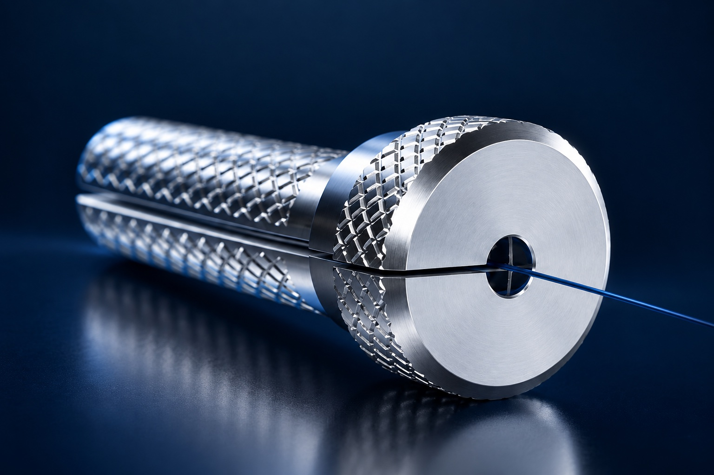

Different approaches.
A shared ambition.
Intelligent, hand-operated tools shaped around the needs of complex surgery. Explore our two areas of development.
Argys Tiburon.
Sensing and aspiration.
Designed to work together.
Our first instrument concept brings Doppler vascular sensing and surgical aspiration into a familiar, hand-operated tool.
Tiburon is being developed to help surgeons identify nearby blood flow during tumor removal. Our focus is useful information at the point of action, with ergonomics and workflow considered from the beginning.
- Clinical focus
- Neurosurgery
- Development direction
- Doppler sensing, aspiration and ultrasonic tissue fragmentation
- Next milestone
- Bench validation in realistic conditions
Concept under development. Clinical performance has not been established. The animation is a symbolic illustration of the development direction.

Navigate complexity.
Rethink the workflow.

Simpler workflows.
For brain aneurysm care.
We’re developing endovascular tools to simplify the steps of brain aneurysm treatment, with the aim of making complex procedures more intuitive and efficient.
Treating an aneurysm aims to prevent rupture or further bleeding and protect brain tissue. Our focus is reducing time spent managing instruments so clinicians can concentrate on securing the aneurysm. Clinical context
- Clinical focus
- Brain aneurysm treatment
- Development direction
- Simpler instrumentation and procedural workflows
- Current priority
- Concept development and engineering feasibility
Early development. Workflow and clinical benefits have not yet been established.
Built through
collaboration.
Clinical needs guide our work. Engineering and industry support help move it forward.
Argys is in negotiations with multiple Fortune 500 companies and manufacturers of our predicate devices. Industry collaborators are providing prototyping support as we prepare for bench validation.
Meet the people behind Argys